Screen layout
Build blocks on the left, and the regex and its result on the target text appear on the right.
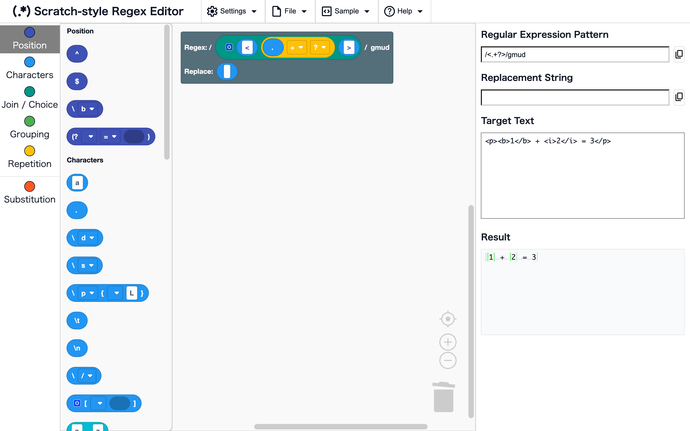
Workspace and toolbox
WhereLeft side of the screen
Drag blocks from the toolbox on the far left and drop them in the workspace. The workspace starts with the root block, and the regex is built from the blocks connected to it. Click a category name in the toolbox to jump to the blocks in that category.
Regular Expression Pattern, Replacement String, Target Text, and Result
WhereRight side of the screen
- Regular Expression Pattern: the regex you built, shown as
/pattern/flags - Replacement String: the replacement built from the blocks connected to the root's replace slot
- Target Text: type the text you want to try the regex on
- Result: the result of using the regex on the target text (see Result display)
Changing the blocks or the target text updates the display right away.
Result display
The result shows the matches while the root's replace slot is "No replacement", and the replaced text once you connect replacement blocks.
Match highlighting
WhereResult (when the replace slot is "No replacement")
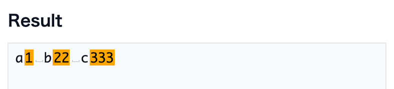
The parts of the target text that match the regex are shown in orange.
Examples
\d+→a1 b22
Replacement highlighting
WhereResult (when blocks are connected to the replace slot)
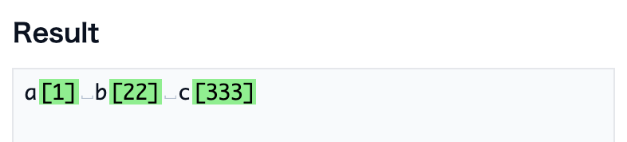
The replaced text is shown, with the replaced parts in green.
Examples
- Regex
\d+, replace[$&]→a[1] b[22]
Visible whitespace
WhereResult
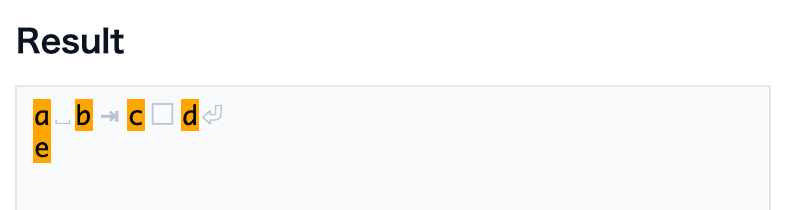
Invisible whitespace characters are shown as faint symbols.
␣: space□: full-width space⇥: tab⏎: line break
Note
The symbols are only for display. Copying from the result does not include them (the original whitespace characters are copied).
Error display
WhereResult
When the regex is not valid (for example, an unclosed (), the error message is shown in the result.
Right-click menu
Right-click a block (long-press on a phone) to open a menu of actions for that block.
Actions that cannot be used are shown faded.
For items with a ? on the right, clicking the ? opens the explanation of that feature on this page in a new tab.
Convert to blocks / Convert to text
WhereRight-click a block → "Convert to blocks" / "Convert to text"
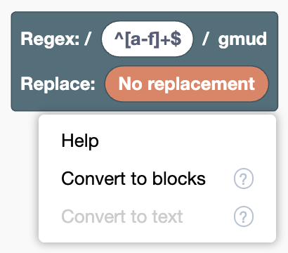
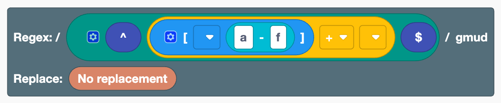
Converts between a regex written as text and blocks, in both directions.
- Convert to blocks: turns a text block, or the regex typed in the root's regex slot, into a combination of blocks. When you right-click the root, the content of its regex slot is converted.
- Convert to text: turns the block you right-clicked, together with the blocks inside it, into a single text block. For a block connected to the root's regex slot, the root goes back to the state where the regex is typed directly in it.
Both can be undone with a single Ctrl+Z (⌘+Z on a Mac).
Examples
- Type
^[a-f]+$in the root's regex slot and convert it to blocks → it becomes a combination of start of line, character class, range,+, and end of line blocks
Note
- Text blocks inside a
[ ]block or in the replace slot cannot be converted on their own (write the whole[a-f]as text to convert it) - Converting to text and back to blocks does not restore display settings such as External Inputs
- Parts that have no matching block (such as
\x41) stay as text blocks
Group N items / Ungroup
WhereRight-click a block inside a join, choice, or replacement join → "Group 2 items" to "Group 5 items", "Group 6 or more items…", "Ungroup"
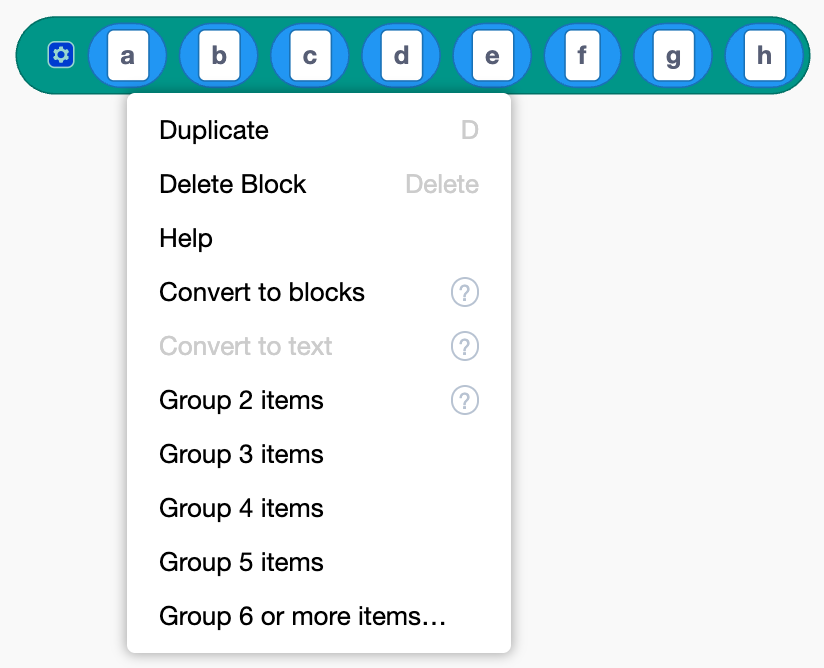
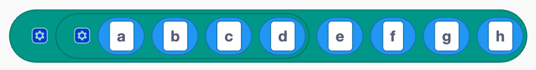
Rearranges the contents of a join block without dragging.
- Group N items: puts N items, starting from the block you right-clicked and going right, into a new block of the same kind
- Group 6 or more items…: asks for the number of items, then groups them
- Ungroup: spreads the contents of an inner block of the same kind into the outer block, at the same position
Grouping does not change the regex that is built. Combined with External Inputs / Inline Inputs, it helps you organize a long, complex regex into meaningful chunks that are easier to read.
Examples
- In a join of "a" to "h", right-click a → "Group 4 items" → it becomes "(a b c d)", "e", "f", "g", "h"
Note
This cannot be used inside a character class [ ] (putting [ ] inside [ ] would mean something else).
External Inputs / Inline Inputs
WhereRight-click a block with several slots → "External Inputs" / "Inline Inputs"
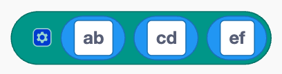
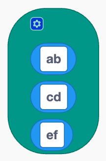
Switches how a block's slots are laid out. "External Inputs" stacks the slots vertically, and "Inline Inputs" puts them back in one row. This is easier to read when a join or choice gets long. It does not change the regex that is built.
Help
WhereRight-click a block → "Help"
Opens the explanation of that block in the Block Reference.
Working with blocks
The basic block operations are the same as in Scratch. On a phone, you can do the same with taps and drags.
Basic operations
WhereWorkspace
- Connect: drag a block to a slot (the hollow part) of another block
- Disconnect: drag a connected block out
- Delete: drag a block onto the toolbox or the trash can, or select it and press the Delete key
- Duplicate: right-click → "Duplicate". You can also use Ctrl+C / Ctrl+V (⌘+C / ⌘+V on a Mac)
- Undo / redo: Ctrl+Z / Ctrl+Shift+Z (⌘+Z / ⌘+Shift+Z on a Mac). You can also right-click an empty area of the workspace
- Tidy up: right-click an empty area of the workspace → "Clean up Blocks"
- Zoom in / out: the
+-buttons at the bottom right
Changing the number of slots
WhereClick the gear icon on a block that has one (join, choice, character class, replacement join)
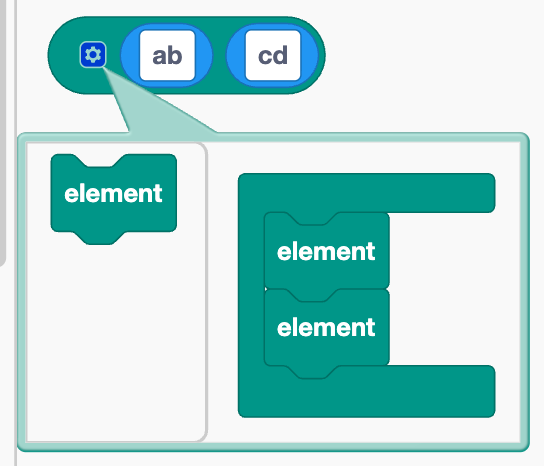
A small editor opens. Adding or removing the "element" blocks inside changes the number of slots. Reordering the "element" blocks also reorders the slots.
Creating, renaming, and deleting group names
WhereThe dropdown of a named group, named backreference, or named group reference
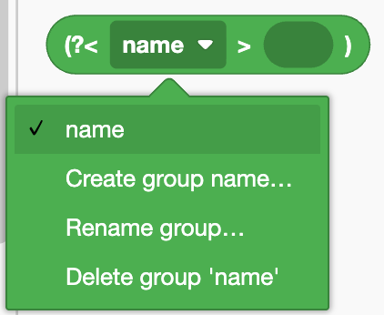
- Create: choose "Create group name…" and enter a name
- Rename: choose "Rename group…". The name also changes in every block that uses it
- Delete: choose "Delete group 'name'". The blocks that use that name are deleted too
Note
Names must start with a letter and can only contain letters, digits, and _. You cannot use a name that already exists.
File
Use these from "File" in the top menu. You can save the regex you built as a file, and load it again.
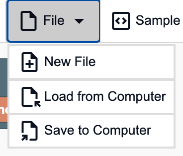
New file
WhereFile → "New File"
Clears the workspace and the target text, and goes back to the initial state.
Note
Everything is cleared without confirmation, and it cannot be undone with Ctrl+Z. Save anything you want to keep first.
Save
WhereFile → "Save to Computer"
Downloads the blocks in the workspace and the target text as a JSON file named regex_workspace.json.
Load
WhereFile → "Load from Computer"
Choose a saved JSON file to restore the blocks and the target text to how they were when saved.
Note
The current content of the workspace is replaced with the loaded content.
Sample
Load examples from "Sample" in the top menu. After loading one, change the blocks to see how the result changes.
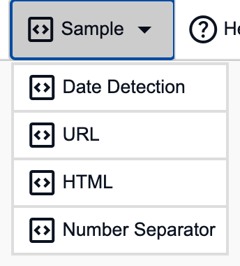
Note
The current content of the workspace is replaced with the sample.
Date Detection
WhereSample → "Date Detection"
Splits date-times like 2025-08-20 14:21:03 into year, month, day, hour, and minute with groups, and rearranges them into 2025/08/20⇥14:21 with a replacement.
URL
WhereSample → "URL"
Extracts the domain and path from URLs with named groups, and turns them into "domain→path" with a replacement.
HTML
WhereSample → "HTML"
Removes only the HTML tags with <.+?>.
Remove the ? from the + block to see everything get removed (lazy matching).
Number Separator
WhereSample → "Number Separator"
Uses lookbehind and lookahead to match the positions between digits, and separates 1340 into 1, 3, 4, 0, one digit at a time.
Settings
Use these from "Settings" in the top menu.
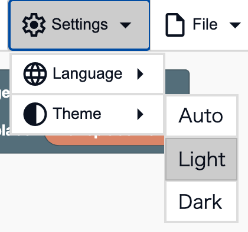
Note
Settings are not saved, so they go back to the default when you reopen the page.
Theme
WhereSettings → "Theme"
- Auto: switches between light and dark to match your device's setting
- Light: uses light colors
- Dark: uses dark colors
Language
WhereSettings → "Language"
Switches the language of the screen and the blocks. Choose from 日本語, English, 简体中文, Español, 한국어, and हिंदी. At first, it follows your browser's language (English if the language is not supported).
Other
Opening the reference
WhereHelp → "Block Reference" / "Features"
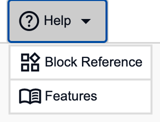
Opens the Block Reference or this page (Features) in a new tab. The blocks you are working on stay as they are.
Note
The reference is available in the same six languages as the editor, and opens in the language selected in the editor.
Copy
WhereThe buttons to the right of Regular Expression Pattern and Replacement String
Copies the regex pattern (as /pattern/flags) or the replacement string to the clipboard.
You can paste it into your own program.
Typing tabs in the target text
WhereTarget Text
Pressing the Tab key in the Target Text field inserts a tab character instead of moving to another field. This is useful for trying tab-separated data.